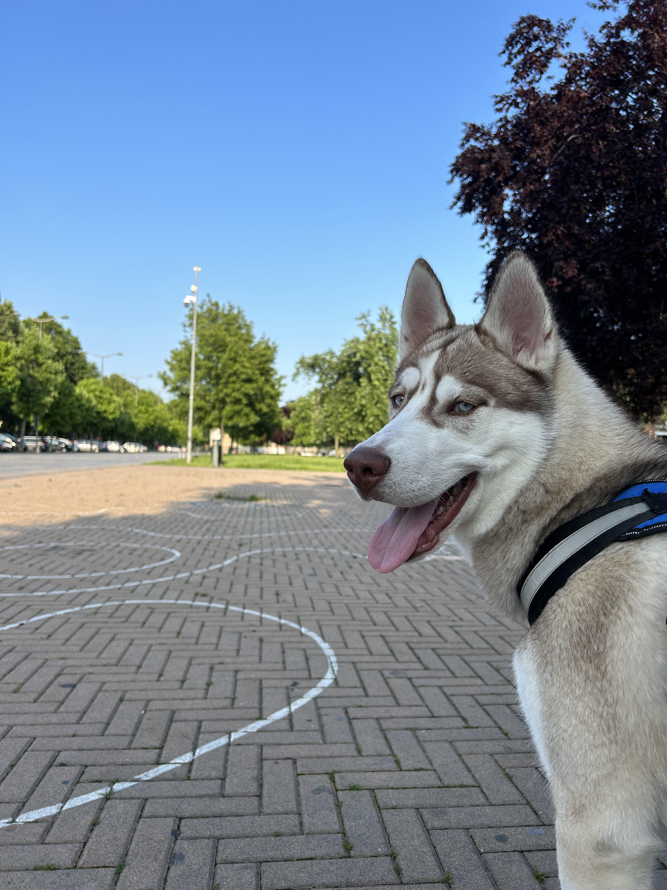
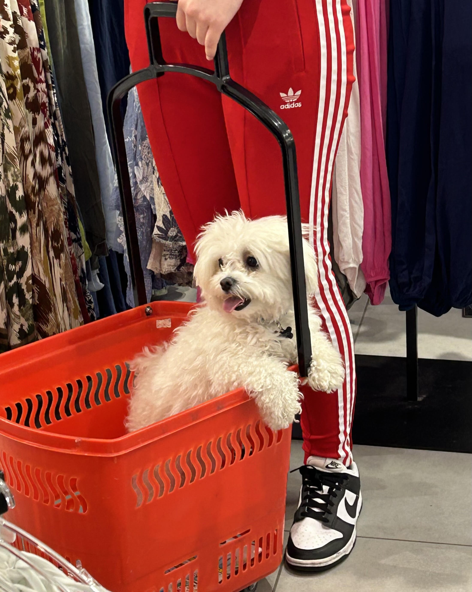

Sono nata a Moncalieri,ma vivo a Nichelino(TO).
Ho origini rumene difatti i miei genitori vengono dalla Romania,vivo insieme ai miei genitori,mia sorella,il mio cagnolino di nome Toby(razza maltese)e mia nonna.
Ritengo sia importante specificare questa "differenza" perchè molte persone sapendo di essere stranieri tendono a puntare il dito senza conoscere la persona,Secondo me il bello di avere altre origini e proprio quello di sapere un'altra lingua e grazie a questo ti permette di viaggiare,conoscendo altri posti nel mondo insieme ai vari stili di vita e culture che esistono.
Una delle mie passioni che mi caratterizza è quello dello shopping,che per me è come una dipendenza ma come anche quella della danza latina e reggaeton che ho sempre avuto sin da piccola,ma anche il scoprire posti nuovi uscendo anche solo con gli amici ma anche viaggiando e conoscendo altre lingue.
Frequentando questa scuola sto imparando a:utilizzare il computer per scopi informatici,iniziare a "programmare" una pagina personale capendo cosa c'è dietro a una pagina web e ho imparato a conoscere la gente nel profondo senza giudicare un libro dalla copertina:
La mia vita è un caraterizzarsi di detti. ad es. "L'abito non fa il monaco" perchè non è detto che una persona a cui piace vestirsi in un certo modo deve essere giudicata per quello che non è.
Oppure quello di "Non giudicare un libro dalla copertina" perchè non si sa mai quello che la persona che abbiamo davanti possa passare in quel momento oppure ha passato ed è per quel motivo che a noi sembra "cambiata".
Queste sono delle foto dei cani che più ho a cuore ovvero il mio e quello di mia nonna.
 